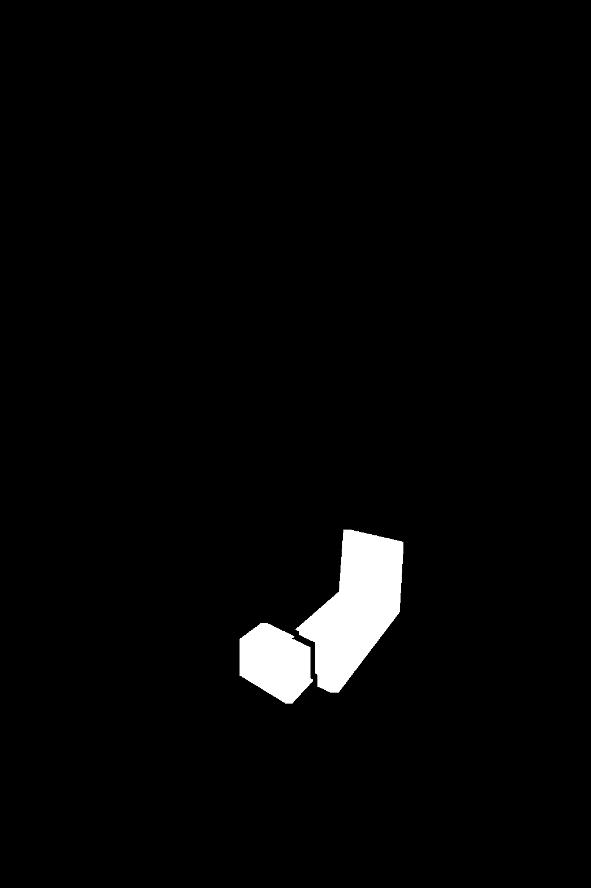
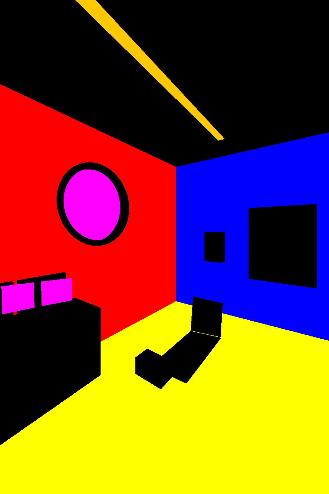
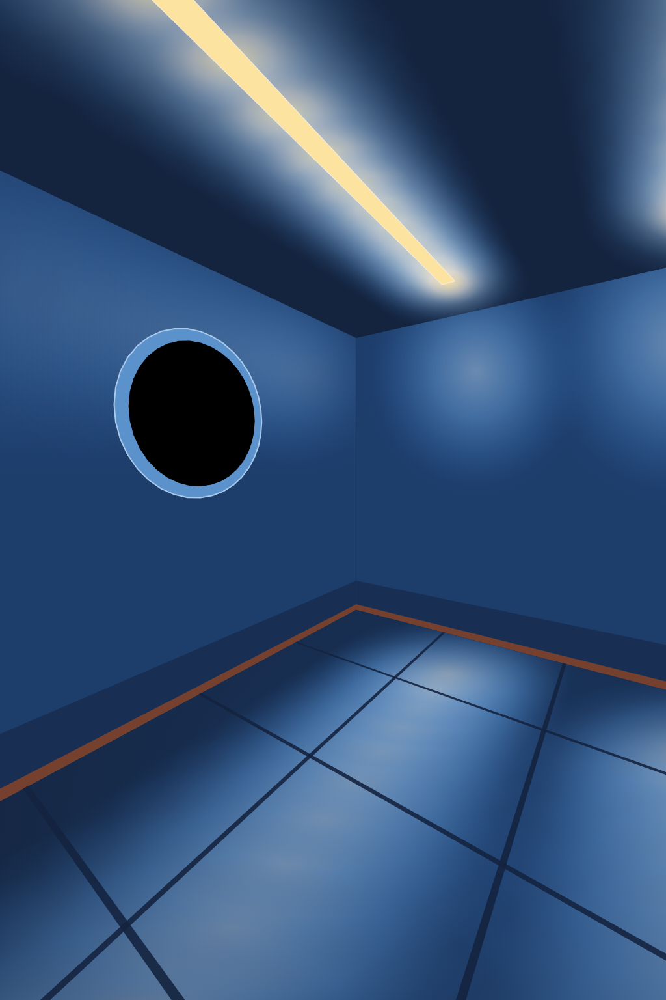
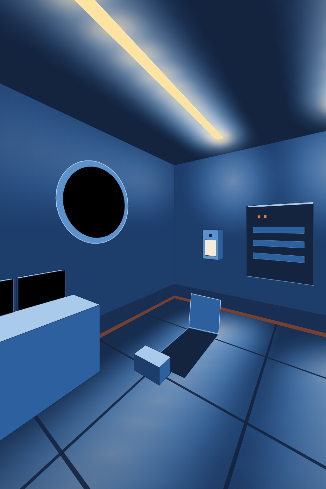
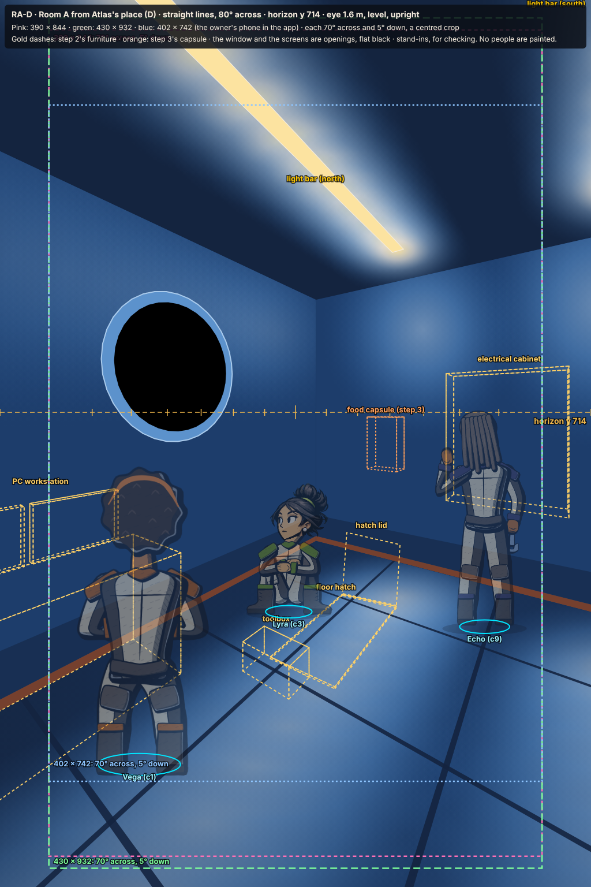
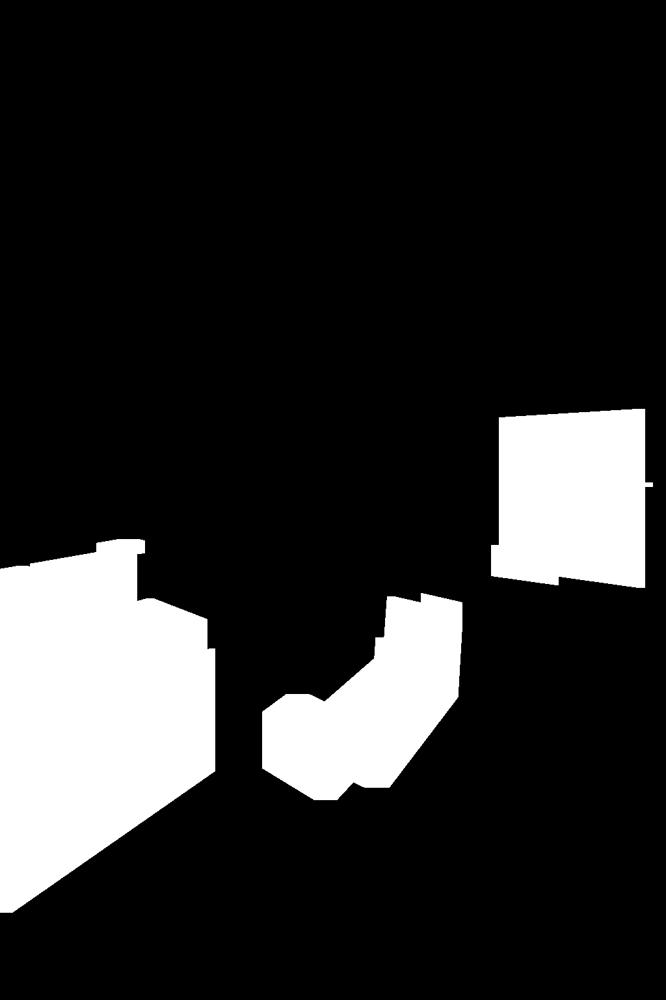
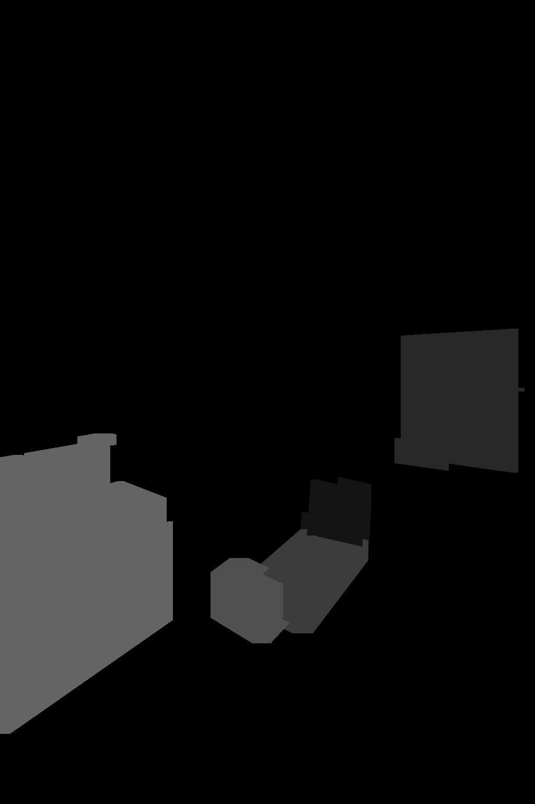
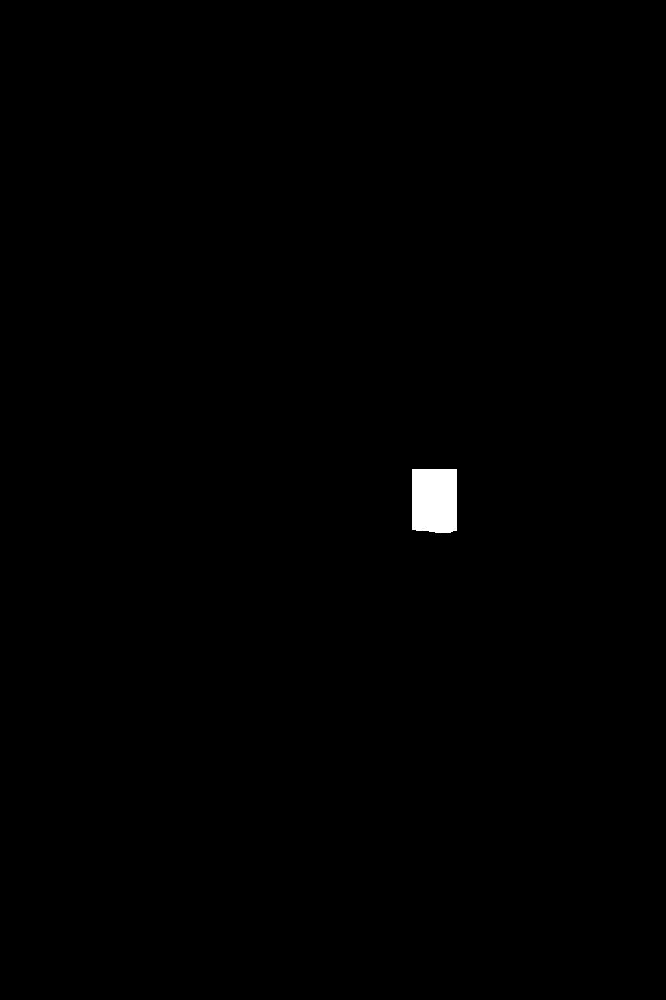

Sheet RA-D · Room A, view D
Version 2.4 · for the Lead’s review · RA-D-4c, view D’s final plateRoom A’s fourth view, from Atlas’s place by the west wall, painted the way view A was: three pictures, the empty room, then its furniture, then the food capsule in a step of its own. Atlas’s own crates are out of this view. No people are painted, because code draws them. Every picture made from this sheet is AI-generated and recorded as such. The only inputs are the code-drawn guides and masks on this page, and the pictures its own steps keep.
- The capsule, from step 3’s raw, inside one outline that closes on the housing’s own ink, with 1 px of feather: 3,438 px. The housing runs 7.37 px above the shape (its top face), 3.59 px past its right edge, 2.08 px past its left and 10.85 px below it. The bracket plate is left out: none of its 1,448 px taken whole (59 in the 1 px feather under the bottom edge), so RA-D-4’s wall stays below the housing, and its seam passes behind it. Below.
- The toolbox’s shadow, from RA-D-3h’s raw: 3,021 px; the deck seam’s crossings 0.19 px apart (its dark line) and 0.19 px (its light line), as in the dry run you saw.
- Changed: 6,459 px against RA-D-4, none outside the two outlines and their feather; the other 1,566,405 of 1,572,864 are RA-D-4’s. The toolbox and both screens untouched.
colours D 3(step 2b’s map): all ten gates. - The capsule’s painted box, in
painted-D.json(now on RA-D-4c), for view D’s lift, its occlusion and any overlay at the capsule: in the picture x 631.92–705.59, y 712.63–829.85; on the east wall 0.382 × 0.678 m (the plan’s 0.32 × 0.55), its middle within 1 cm of the plan’s; with its hatch’s and lens’s boxes. - Files. New:
compositeD4c.pyandcomposite-D4c.json;painted-D.jsonmoves on to RA-D-4c and gains the capsule. Every prompt, mask, map and guide, and the tool (version 3), are version 2.3’s.
Version 2.3’s changes
- RA-D-3hc, RA-D-3h with the hatch, its lid and the toolbox completed in code from its raw, inside one outline traced on the raw all round their outer ink, with no closing path: the lid’s top (up to 25.3 px past the mask) and sides, both rims’ outer edges (up to 11.5 px), the 642 px of the gap where the raw runs the hatch on to the box, and the toolbox whole at the raw’s place. 15,949 px differ from RA-D-3h; the other 1,556,915 of 1,572,864 are unchanged. Below.
- The toolbox’s place, recorded for view D’s lift and occlusion (
painted-D.json): on the deck 8.3 cm west of the plan’s place, turned 8.7°. - Left out: the raw’s shadow on the deck at the box’s front-left, which lies outside its ink; RA-D-3h’s lit deck stays there. It can be taken too, if you want it.
- Step 3 pinned. The tool, version 3:
s3,keep3andlift3stop unless their start is RA-D-3hc, pixel for pixel; step 3’s colour check uses step 2b’s map, on which RA-D-3hc passes all ten gates. Step 3’s mask, its prompt and every other file are version 2.2’s. Below. - Files. New:
compositeD3hc.py,composite-D3hc.json,painted-D.jsonand the tool, version 3. The manifest pins step 3’s start and puts version 2.2’s change after 2.3’s, unchanged.
Version 2.2’s changes
img/ra-D-place2b.png b549067b5ec5… (was 5ee22bb14909…), img/ra-D-split2b.png bf318b2d0f92… (was f015bb79ee92…), alpha 1014e5d82d55…. Every prompt (s2b included), the guide, the colour maps, the tool, RA-D-3x and every other file the tool reads are version 2.1’s, byte for byte; the page’s two overlays of step 2b’s mask on RA-D-3x (img/ra-D-3x-step2b.png and its 2x zoom) are redrawn with the new mask. The toolbox stays as version 2 has it: the painted crossing lies inside its outline.Version 2.1’s changes
- RA-D-3x, the base. RA-D-1 with RA-D-3’s desk and cabinet (RA-D-3 is the better run for both), completed in code from its raw where the keep cut them, its two screens fitted to the painted black and gated; the hatch’s area left as RA-D-1’s empty deck. Below.
- Step 2b’s mask. The hatch and its lid as one area, the toolbox as its own, 8 px of RA-D-3x’s painted deck between them; the selective 12 px growth on both; the desk and the cabinet not masked: 2.63% of the picture. Below.
- Step 2b’s prompt. Step 2’s, with its hatch, lid and toolbox sentence word for word; the desk’s and the cabinet’s sentences dropped; four sentences new, to hold the size and the place. The lines changed.
- The tool, version 2, adds step 2b’s commands, which stop unless their start picture is RA-D-3x, pixel for pixel; and step 2b’s colour map has the screens where RA-D-3x paints them.
- The feet’s wall-foot reading stays in the measuring script as a switch, off, as the Lead asked: on, it gives Vega +1.7, Echo −1.4 and Lyra +18.1 px, the wall’s-foot column of version 2’s table. The feet are unchanged.
- Files. New:
img/ra-D-place2b.png,img/ra-D-split2b.png,img/ra-D-regions2b.png,compositeD3x.pyand its record,screens-D.json,kit-D2b.jsonandstep2-D.json. Every version-2 file and prompt is unchanged, byte for byte; the manifest adds step 2b and puts version 2’s change after version 2.1’s, unchanged.
Version 2’s changes
- The selective 12 px growth (the Lead, 27 November, 18:38). Step 2’s mask grows 12 px more wherever no traced feature, small light, window or step-3 capsule lies within 15 px of the new edge, so a piece painted a little past its outline is not cut: 25,320 px added, 14.50% → 16.11% of the picture. The split map grows with it, each added pixel taking its piece’s grey. Larger overruns are completed in code from the raw, as RA-B-3c was. The overlay.
- The 15 px rule, against RA-D-1’s painted features. Passed: 8 features near the masks; 0 pass outright and 8 on 8 named exceptions, for the Lead’s decision, each where a piece stands in front of a feature. Below.
- The window, fitted to RA-D-1’s painted black. The moving sky’s outline is the painted opening’s own edge, read on 720 rays from its middle where the lightness reaches 0.12 (
window-D.json): 32,353 px, x 190–374, y 527–753, flat black (p95 0.067, under the gate’s 0.12). The guide’s window was 4 to 18 px off it. Steps 2 and 3’s colour map now reads the opening from the painting. Below. - The foot lines. Read on the painted deck at each spot: Vega −10.8, Echo −15.8, capsule visitors +13.9 move; Lyra +7.7 stays, under the Lead’s 8 px. The visitors’ spot is now in view D’s geometry. Below.
- The hatch and its lid reach down to the painted deck. 6 of the hatch’s points move down 8.9 to 15.6 px and the lid’s foot 10.6 to 10.6 px, where the painted deck lies more than 8 px below the guide. Vega’s desk stays: the painted deck under it is within 1 px of the guide. Below.
- The capsule stays on the painted east wall: step 3’s mask begins at x 634, 99 px right of where the painted walls’ feet meet (x 534.7) and 71 px or more right of the darkest column by the corner’s pipes (x 561). Below.
- The prompts are version 1.1’s, byte for byte, as RA-D-1 was made with them.
- Files. New bytes:
img/ra-D-empty-annotated.png,img/ra-D-guide.png,img/ra-D-guide-s2.png,img/ra-D-regions.png,img/ra-D-place.png,img/ra-D-split.png; the other 4 pictures are version 1.1’s, byte for byte. The manifest is new: step 1 done, step 2’s input pinned, the checks and the evidence files.
Version 1.1’s changes
- Added to the colour block (steps 1, 2 and 3), after “no green, purple or red light.”: “Each indicator is a single small dot, never several in a row or a column.”
- The guide. Unchanged: the guides are version 1’s, byte for byte.
- Files. All 10 pictures are version 1’s, byte for byte. The manifest and the prompts are new. Each prompt is version 1’s with only these sentences added (the build checks it): step 1
a3ddbb7110fe…→d0bb8afea165…, step 225fade649e69…→2f249da5f036…, step 3c77eb6026dc8…→3b5b159f8e4e….
- Every piece whole. View A’s step 2 left the cabinet’s right side open, fading into the wall at the mask’s edge, and two masked fixes could not close it, so its frame was drawn in code. Step 2’s prompt here asks for each piece whole, its outline and frame closed on every side, and nothing fading into the wall or the deck at an area’s edge.
- The 15 px rule. View A’s step-1 picture painted wall features that step 2’s mask then had to clear. Here the accepted step-1 picture’s painted features are traced and steps 2 and 3’s masks are checked against them (every edge covers a feature by 15 px or clears it by 15 px), in version 2: below.
- Openings. The round window and the two monitors’ screens are painted flat black and empty, for the game to fill; the colour check holds them to it. Step 2’s mask stays 68 px clear of the window’s frame as the guide draws it, and step 3’s over 100 px.
- The capsule. As in view A, the food capsule is painted in a step of its own, after the furniture, closed and unlit, inside its outline grown 2 px. Code draws its open hatch, compartment, tray, light and shutter over it.
Version 2.4 · step 3’s picture, RA-D-4, completed as RA-D-4c
Step 3’s run, RA-D-4 (kept sha256 4b1c22bedee4…, raw 5b744e667bfb…), was made on version 2.3, from RA-D-3hc: the capsule whole and in its place, its front as the prompt asks. The keep cut the housing along step 3’s shape: its bottom edge and the handle’s lower half, the bracket plate below it, and the right side face’s outer ink. The Lead accepted it for completion in code, the bracket plate left out, as view A’s accepted capsule has none.
RA-D-4c
How. Inside the capsule’s traced outline, step 3’s raw; inside the shadow’s traced outline, RA-D-3h’s raw; each with 1 px of feather outside it; elsewhere RA-D-4 unchanged. RA-D-4 is rebuilt from step 3’s raw over RA-D-3hc first and checked pixel for pixel. The raw file carries an alpha channel (221 to 241, never 255); as the keep did, its colours are taken and the alpha ignored.
The capsule’s outline (99 points, clockwise from its top-left corner) was read on the raw, each edge the midpoint between the housing’s ink and the level 1.5 to 3.5 px beside it: the top-left corner and the top face’s left edge; the top face’s outer ink; the top-right corner; the right side face’s outer ink; the bottom-right corner and the side face’s bottom edge; the housing’s bottom ink; the bottom-left corner; the left side’s outer ink. The wall’s cables above its top-left corner and the bracket’s left ink under its bottom-left corner were left out of the readings. Along every run the outline sits on the ink, dark inside against the wall or the bracket outside:
| Run | Samples | Ink inside (luminance) | RA-D-4c outside |
|---|---|---|---|
| The top-left corner and the top face’s left edge | 33 | 17.3 | 65.8 |
| The top face’s outer ink | 45 | 29.3 | 76.2 |
| The top-right corner | 25 | 13.6 | 89.6 |
| The right side face’s outer ink | 87 | 5.8 | 79.9 |
| The bottom-right corner and the side face’s bottom edge | 29 | 4.8 | 75.5 |
| The housing’s bottom ink | 84 | 7.7 | 70.2 |
| The bottom-left corner | 19 | 15.1 | 54.8 |
| The left side’s outer ink | 95 | 19.1 | 61.2 |
Its size. The housing’s outline spans x 631.92–705.59, y 712.63–829.85; step 3’s shape, the plan’s outline grown 2 px, x 634–702, y 720–819. So the housing runs 2.08 px past the shape on the left, 7.37 px above it (the lit top face the raw paints), 3.59 px past it on the right (the side face’s outer ink) and 10.85 px below it (the bottom edge and the handle); against the plan’s own outline, 4.3, 9.16, 5.37 and 12.67 px.
The bracket, left out. The raw paints a wall-coloured plate under the housing, to about y 848. The outline closes on the housing’s bottom ink, above it: of the plate’s 1,448 px (x 636–705, from the bottom edge down to y 849) none is taken whole, and 59 lie in the outline’s 1 px feather under the bottom edge (alpha up to 0.99). The plate’s top lies in the housing’s shadow, darker than the wall, but the ink is darker still and its edge closes cleanly: along the bottom run (42 points) the ink’s luminance is 6.3 at the median and 12.6 at most, the plate’s beside it 34.3 at the median and 26.1 at least. RA-D-4’s wall stays below the housing: its seam, at y 819.13 at the housing’s left edge and 821.52 at its right, meets the housing above its bottom edge on both sides and passes behind it.
The toolbox’s shadow, as in the dry run: on RA-D-3h’s raw, where it is darker than the plate’s lit deck: the difference in luminance, median-filtered 5 x 5, above 10 levels (closed 7 x 7 so the seam does not cut the band); the lower edge read along normals to the box’s bottom-left edge every 2 px (y = 1078.260 + 0.34968 x, 41 readings, rms 0.47 px), the west edge along rows (x = 2198.727 - 1.5386 y, 19 readings, rms 0.48 px), its blunt corner and the east end as read. The deck seam z = 1 crosses the band: the raw’s inside the outline, the plate’s outside, their crossings 0.19 px apart on its dark line and 0.19 px on its light line.
The capsule’s painted box (painted-D.json). On the east wall, the plan’s depth (0.22 m) kept: the box whose outline through view D’s guide camera has the painted outline’s box (its left, top, right and bottom), found by Newton’s method from the plan’s; the painting draws the housing’s top face as if seen from above, which a box at this height is not, so the box spans the painted outline rather than modelling the top face: z 0.857–1.239, y 0.93–1.608 m (the plan’s z 0.89–1.21, y 1–1.55), 0.382 × 0.678 m against 0.32 × 0.55. Its parts on the plate, for an overlay: the hatch x 639–681, y 756–814; the lens x 649–671, y 727–751. View D’s lift takes the capsule’s area from its outline here (composite-D4c.json’s capsule outline, grown 2 px, with step 3’s mask); its solid for the occlusion is the painted box above, not the plan’s; an overlay at the capsule (an eating visit) goes on the painted outline and its hatch and lens boxes.
The pictures below show step 3’s raw edit, RA-D-4, RA-D-3h’s raw edit and RA-D-4c, all AI-generated (RA-D-4c a code composite of AI-generated pictures); each is labelled in itself and in its caption, and none is an input, an asset or a commit.


RA-D-4c itself, ra-D-4c.png, is not published here as a file of the kit: compositeD4c.py makes it from the image session’s records (RA-D-4, its raw and RA-D-3h’s raw) and RA-D-3hc, and stops unless RA-D-4 rebuilds exactly; its pixels’ sha256 is e94c257ab580f014debb133a443940c545166dd7ef5ea9dd02ec0555628da59d.
Version 2.3 · step 2b’s picture, RA-D-3hc, and step 3 on it
Step 2b’s run, RA-D-3h (kept sha256 3383dba869dd…, raw 3b67e224fb4b…), was made on version 2.2: the hatch right-sized and in its place, the lid upright; the toolbox right-sized, painted about 27 px left of its area. The Lead’s decision: the hatch-only edit worked (the hatch right-sized and in its place, the lid upright); keep the toolbox where the raw painted it; make RA-D-3hc, completing from the raw the hatch’s small overruns (the lid’s right edge and top, the rim’s right side, the near-left rim through the 8 px gap) and the toolbox whole at the raw’s place, closing on its own ink; record the toolbox’s painted place for the lift and the occlusion.
RA-D-3hc
How. RA-D-3h’s raw over RA-D-3x inside step 2b’s mask, feathered by a 2 px Gaussian (the image tool’s keep, so equal to RA-D-3h); inside the traced outline, the raw’s pixels, with 1 px of feather outside it; nothing else from the raw. In the raw the toolbox stands on the hatch’s near-left end, its handle against the hatch’s left rim and its right side against the near rim, so one outline round all three closes on their own ink everywhere. It was read on the raw: each edge’s outer ink read across it every 2 to 3 px (bilinear luminance, 0.25 px steps, walking in from just outside), at the midpoint between the ink and what lies right beside it (1.5 to 3.5 px out: the wall, the deck, or the box’s shadow), straight runs fitted by least squares (readings over 1.2 px off dropped once), corners read along rays every 6 to 8°; the lid’s top-left corner, where a rivet and a seam of the wall touch it, is a 10 px arc tangent to its sides; readings on painted deck seams beside the ink left out.
| Completed | Changed px | Outside the mask | Furthest past it, px | Where |
|---|---|---|---|---|
| The lid: its top, both sides and its corners | 5,032 | 3,540 | 26 | x 578–712, y 895–1066 |
| The hatch’s rims: both outer edges and their corners, the near rim | 5,563 | 2,810 | 14.1 | x 486–704, y 1030–1207 |
| The gap between step 2b’s two areas | 642 | 642 | 7.1 | x 505–550, y 1090–1187 |
| The toolbox, whole: its left side, bottom edges, corners, top and handle | 4,712 | 4,008 | 36.8 | x 386–495, y 1098–1225 |
The overruns. The lid’s top lies up to 25.3 px past step 2b’s mask (its outer ink at y 898 to 912, where the mask’s top slopes from y 916 to 936), its right side up to 16 px at its top corner, its left side up to 12 px; the right rim’s outer edge 10.5 px past at its far end, less toward the near end, and the left rim’s up to 11.5 px. The 8 px gap between the two areas showed RA-D-3x’s deck across the hatch’s near-left end; it is the raw’s now, the rim and the near rim running on to the box.
The toolbox, at the raw’s place. Its left side lies up to 30.6 px left of its area and its bottom-left corner 36.2 px past it. Its base corners in the picture: left (388.5, 1193.34), front (479.6, 1224.41), right (515.21, 1192.7). Each painted base corner moved by the painted deck’s local offset from the guide’s at the box (painted minus guide (-11.3, +7.7) px, where the painted seams x = 0 and z = 1 cross under it: kit-D2b.json) and taken down to the deck through view D’s guide camera; the plan’s box then placed on them by the least-squares turn and shift (its size kept): its centre at (-0.103, 0.979) m, 8.3 cm west of the plan’s (-0.02, 0.98), turned 8.7°, the plan’s box meeting its corners within 3 cm (its west face 0.339 m against the plan’s 0.36, its south face 0.175 m against 0.2). painted-D.json records it: view D’s lift and occlusion use this place for the toolbox, not the plan’s: the lift’s area for the toolbox is its outline here (composite-D3hc.json), and its solid is the plan’s box turned and shifted as above.
Left out. The raw paints the box’s shadow on the deck round its foot: a band about 8 px wide beside its bottom-right edge (inside its area, so RA-D-3h already has it) and a broad one to its front-left, about 20 px, outside its area; the outline closes on the box’s ink, so RA-D-3h’s deck (RA-D-3x’s, lit) stays there. If you want it, it can be taken from the raw too, closing where the shadow’s edge meets the lit deck.
The pictures below show RA-D-3h, its raw edit and RA-D-3hc, all AI-generated (RA-D-3hc a code composite of AI-generated pictures); each is labelled in itself and in its caption, and none is an input, an asset or a commit.


RA-D-3hc itself, ra-D-3hc.png, is not published here as a file of the kit: compositeD3hc.py makes it from the image session’s records (RA-D-3h, its raw and RA-D-3x), and stops unless its pixels’ sha256 is 5a7f55ad9bbf048e0784afe8da0c2dd49d10fadedc33a275208872b5d7beef09.
Step 3 on RA-D-3hc
The tool, version 3. s3, keep3 and lift3 stop unless the picture they start from is RA-D-3hc, pixel for pixel (sha256 5a7f55ad9bbf048e0784afe8da0c2dd49d10fadedc33a275208872b5d7beef09), except with --stand-in, which only the dry run uses. Step 3’s colour map is step 2b’s, with the two screens where they are painted: on RA-D-3hc it passes all ten gates (the openings’ p95 lightness 0.047); with step 2’s map it would fail the openings (0.4), the screens not being where the plan put them, as with RA-D-3x.
Unchanged. Step 3’s mask (img/ra-D-place3.png, 0.42% of the picture, alpha 894867aaba04…), on the east wall clear of the hatch and the toolbox; its prompt (sha256 3b5b159f8e4e…); and every prompt (s3 included), every mask (step 3’s place3 included), split map, colour map and guide, and every other file the tool reads, as version 2.2’s.
The dry run ran step 3’s commands with --stand-in on step 2b’s kept stand-in (the image session’s pictures are not in the kit), the guide standing in for step 3’s raw edit: the mask’s alpha as expected, nothing changed more than 4 px outside it, the capsule lifted, and the colour check with step 2b’s map passed. Without --stand-in they stop on any picture but RA-D-3hc.
Version 2.1 · step 2 held; step 2b on RA-D-3x
Step 2’s two runs, RA-D-3 (sha256 abaf334d030a…) and RA-D-3b (sha256 7abd1f4fd9c3…), were made on version 2 (1795812844-7ba4). Held by the Lead on 27 November (21:03): both runs painted the hatch bigger and nearer than its area, running it across the toolbox’s part of the same area, and put the toolbox outside its area; their desks and cabinets are usable. The Lead’s decision: make RA-D-3x and sheet RA-D v2.1, step 2b on RA-D-3x, the hatch and lid as one area and the toolbox as its own, with the selective growth; the desk and cabinet not masked; prompt lines to hold the size and place. One go; if the hatch still will not sit, building it in code from another view’s painted hatch comes before any more runs.
RA-D-3x, the base
Which run, and why. RA-D-3 for both areas. The cabinet: RA-D-3’s frame ends 22 to 30 px below the mask, RA-D-3b’s 46 to 56 px (a taller cabinet, with two boxes hanging below it); both run about 7 px past the mask on the right. The desk: RA-D-3’s desk runs past the mask only at the right monitor’s right bezel (22 px) and the desk top’s right corner (up to 14 px); RA-D-3b’s also at the left monitor’s top (about 15 px) and at the desk’s right end (about 15 px). And both raws carry a sliver of the misplaced toolbox into the desk’s area, on the deck in front of it: trimmed out.
How. RA-D-3’s raw over RA-D-1 inside the step-2 mask limited to the desk’s and the cabinet’s areas and trimmed in front of the desk, feathered by a 2 px Gaussian (the image tool’s keep, so equal to RA-D-3 there); inside each traced outline, the raw’s pixels, with 1 px of feather outside it; nothing else from the raw. The trim in front of the desk is 3,135 px of open deck, left as RA-D-1’s: on its 603 px where RA-D-3 differs most from RA-D-1, the largest difference falls from 208 levels to 34. The outlines were read on the raw (on the raw: the cabinet’s frame read across its ink every 4 px on each side, at the midpoint between the ink and the wall beside it, straight lines fitted (readings over 1.2 px off dropped once); the monitor’s bezel and the desk’s end read from the luminance at 5 to 6 times).
| Completed | Changed px | Past the mask | Where it closes | Where |
|---|---|---|---|---|
| The cabinet’s frame, all round | 11,937 | 8,593 | on its own ink | x 763–1000, y 631–927 |
| The right monitor’s right bezel | 1,927 | 1,488 | 8.5 px inside the mask | x 206–233, y 855–927 |
| The desk top’s right end, with its leg | 968 | 357 | 7.5 px inside the mask | x 314–332, y 967–1175 |
The screens. Painted flat black in the raw, both fitted to the black, as views B’s and C’s were, and gated (flat black, as the colour check gates an opening (colour-check-ra1.py): 95% of the region under OKLCH lightness 0.12): the left screen 8,376 px, p95 lightness 0.0935; the right screen 6,927 px, p95 lightness 0.0951. They are not where step 2’s map draws them, so step 2b’s colour map (img/ra-D-regions2b.png) is step 2’s with these two screens in place of the map’s (18,208 px out, 15,303 in). On RA-D-3x itself the colour check passes every gate with that map (the openings’ p95 lightness 0.047); with step 2’s map it fails one, the openings (0.4). screens-D.json is view D’s live-screen region, as screens-C.json is view C’s.
The pictures below show RA-D-3, the two runs’ raw edits and RA-D-3x, all AI-generated (RA-D-3x a code composite of AI-generated pictures); each is labelled in itself and in its caption, and none is an input, an asset or a commit.


RA-D-3x itself, ra-D-3x.png, is not published here, being an AI-generated picture without a label of its own: compositeD3x.py makes it from the image session’s records, and stops unless its pixels’ sha256 is 3575e978f51f10f4f0b722dc4f4bf4c90e9026754ade49e5d361410ba423c0ec.
Step 2b · the hatch, its lid and the toolbox
One masked edit of RA-D-3x in two areas: the hatch and its lid as one, the toolbox as its own. The input shows the step-2 guide there; the desk and the cabinet, already painted, are not masked. The toolbox’s outline grown 6 px, as in step 2, but no more than 2 px over the hatch’s outline; the hatch’s and the lid’s outlines grown 6 px, stopping 8 px short of the toolbox’s area. No growth: it is off for step 2b, on both areas (the Lead, 22:29), so each area is its outline plus 6 px, 2.63% of the picture, the two areas 8 px apart. Version 2.1 had the selective 12 px growth, 3.47% of the picture. Where the toolbox stands in front of the hatch’s near-left end their outlines touch, so the strip between the areas is cut from the hatch’s side: 895 of the hatch’s 15,032 outline px (x 506–550) keep RA-D-3x’s painted deck.
| Piece | Grey | Outline px | In the mask | Its area px | Lifted in the dry run |
|---|---|---|---|---|---|
| Toolbox | 80 | 9,983 | 9,983 | 12,620 | 10,382 |
| Floor hatch | 60 | 15,032 | 14,137 | 17,305 | 14,497 |
| Hatch lid | 20 | 9,940 | 9,940 | 11,433 | 9,740 |
The 15 px rule on step 2b’s mask, against RA-D-1’s traced features: passed. The 3 named exceptions it uses are among the eight the Lead accepted for step 2: junction box and pipes in the corner (behind the lid’s top-left corner); light box beside the cabinet (between the cabinet (step 2) and the capsule (step 3)); paper on the east wall (above the capsule’s top (step 3)). The mask is 53 px from RA-D-3x’s painted desk and cabinet, 119 px from the window’s frame, 97 px from step 3’s capsule and at least 60 px from both indicator dots.
What the prompt can point at, measured on RA-D-1’s painted deck (measure-D2.json’s lines): the hatch’s near end lies 36.5 and 30.2 px past the painted seam the toolbox stands on (x = 0), at its two corners, and its far end, the lid’s hinge, 11.9 and 11.8 px past the next (x = 1): one deck plate long, as the room has it (x 0.13 to 1.13 m). The two painted seams under the toolbox cross at (465.3, 1169.3), inside its outline. No painted seam runs along the hatch’s near long rim: the nearest, z = 0, is 0.65 m nearer and outside the area, and z = 1 runs under the opening, 0.15 m from its far rim. So the size and place lines anchor the hatch’s two ends, and the toolbox to the crossing.




Step 2b’s prompt, against step 2’s
sha256 e3442e9712ccefd7ac64eaf6112649b7224104ae9ed97b50b4c5ef1cd88a3c13, 3,831 characters. The style, colour and keep-out blocks are step 2’s, word for word. In the PLACE block, sentence by sentence:
- This is a correction of the attached picture.
- Repaint only the masked areas, and leave everything outside them exactly as it is.
- Paint each piece whole, with a crisp drawn outline all round it and its frame closed on every side: nothing fades softly into the wall or the deck at an area’s edge.
- Ahead, in the deck: an open hatch, a long rectangular opening about 1 m by 0.5 m with a raised steel rim all round, its near edge crisp and lit, showing a dark space beneath with pipes and cables; at its far end, on the right, its heavy steel lid, hinged along that edge and raised almost upright; at its near end, on the left, a closed steel toolbox standing on the deck.
- The three masked areas hold five pieces of furniture, each filling its own part exactly, painted in full detail in the picture’s style and light.
- On the left, nearest, against the far wall and cut off by the picture’s left edge: a long steel desk about 1.3 m wide and 0.74 m high, with two flat monitors standing side by side on it; their screens are flat black and empty, for the game to fill.
- No chair stands at the desk.
- On the right, mounted on the right-hand wall about 0.8 m above the deck: a steel electrical cabinet, about 0.9 m wide and 1.15 m tall, with no door, its front open on rows of breakers and neatly bundled cables, every cable in its place and none hanging loose, with two small warm orange indicator lights near its top.
- The two masked areas hold three small pieces: the larger area, ahead, the hatch and its lid together; the smaller area, on the left, the toolbox alone.
- Each fills its own area exactly, with nothing of it outside, painted in full detail in the picture’s style and light.
- The hatch is small in the picture, one deck plate long and half a plate wide: its near end lies just past the painted seam that runs under the toolbox, and its far end, where the lid is hinged, just past the next seam over.
- The toolbox stands inside its own area at the hatch’s near end, over the crossing of two painted deck seams: no larger and no nearer the viewer than its area.
Why these lines. Both runs filled the one area that held the hatch, its lid and the toolbox with a hatch, and painted the toolbox nearer, outside it. Here the toolbox has its own area, and the prompt says which area holds what and that each piece fills its own. The hatch is called small and given in deck plates, which the model can see round it, with its two ends tied to the two painted seams they lie just past; the toolbox is tied to the painted crossing of two seams under it, “no larger and no nearer the viewer than its area”. Without the growth, an area is its piece’s planned outline plus 6 px, so a piece that fills its area exactly is at most 6 px larger each side; a right-sized piece that runs a little past it is completed from the raw, as for B, C and E.
Step 2b: the prompt, 3,831 characters · sha256 e3442e9712ccefd7…
Create an illustrated science-fiction world with convincing three-dimensional depth and a hand-inked graphic-novel finish. Use strong silhouettes, expressive outlines, textured shadows and worn materials. Build environments from layered machinery, exposed pipes, suspended cables, overlapping panels and objects that suggest everyday use and repair. Organize dense detail around clear focal points. Use controlled colour palettes with warm luminous accents against cool shadow, giving each location its own atmosphere. The world should feel active, inhabited and larger than the visible frame, with layered depth, while the composition stays clear. Overall: lived-in, cyber, illustrated science fiction, lit and readable: warm lamplight against cool blue-steel shadow, dark only in the corners. This is a still picture and code adds the motion, so paint everything crisply: no motion blur, no lens blur, no film grain. Room A, the crew bay, in the same illustrated world: blue steel, lit warm. The whole room is one blue-steel family, the colours of the attached guide: deep navy in the shadows and corners (#14243F, #1D3D6B), steel blue on the walls and the deck (#2D609E), turning paler where the light falls (#5C92CC, #A9CAEB). The light is warm: the two light bars glow cream along their length (#FCE3A0), with a warm paper-white glow (#F4EBDD) on the ceiling around them and soft pools of pale light on the deck below. Walls, panels, pipes, cables and deck plates take their colour from that family; worn edges, rivets and plate seams show a little rust (#75402E); nothing is neutral grey, and nothing is tan, beige, olive, purple or violet. The shadows are deep navy, never black-brown or grey. Labels and paper are blank, in a warm paper white (#F4EBDD). Small indicator lights are warm orange (#EC793C); no other coloured light, and no green, purple or red light. Each indicator is a single small dot, never several in a row or a column. Practical and worn, a working bay, quiet but lived in. The guide is the room's colour plan: paint over it in full detail and texture, but keep its colours and where its light falls. This is a correction of the attached picture. Repaint only the masked areas, and leave everything outside them exactly as it is. The two masked areas hold three small pieces: the larger area, ahead, the hatch and its lid together; the smaller area, on the left, the toolbox alone. Each fills its own area exactly, with nothing of it outside, painted in full detail in the picture's style and light. Paint each piece whole, with a crisp drawn outline all round it and its frame closed on every side: nothing fades softly into the wall or the deck at an area's edge. Ahead, in the deck: an open hatch, a long rectangular opening about 1 m by 0.5 m with a raised steel rim all round, its near edge crisp and lit, showing a dark space beneath with pipes and cables; at its far end, on the right, its heavy steel lid, hinged along that edge and raised almost upright; at its near end, on the left, a closed steel toolbox standing on the deck. The hatch is small in the picture, one deck plate long and half a plate wide: its near end lies just past the painted seam that runs under the toolbox, and its far end, where the lid is hinged, just past the next seam over. The toolbox stands inside its own area at the hatch's near end, over the crossing of two painted deck seams: no larger and no nearer the viewer than its area. No people, and no words, letters or logos. Leave screens plain for the game to fill: openings marked black in the guide stay flat black and empty. No figures, faces, hands, silhouettes or animals; no signs, symbols or readable screens (any label is blank or abstract marks); no buttons or panels that look like game controls; no emblems, insignia, signature, watermark or border.
sha256 e3442e9712ccefd7ac64eaf6112649b7224104ae9ed97b50b4c5ef1cd88a3c13, of the text in UTF-8, as room-a-ra-d-prompts.txt gives it.
The commands
# RA-D-3x, step 2b’s start picture, rebuilt from the image session’s records (img/RA-D-1.png, img/RA-D-3.png and # img/RA-D-3-raw.png there, each checked by its sha256); it stops unless its pixels are RA-D-3x’s python3 -I compositeD3x.py <records folder> N=… # the step-2b picture’s name, as the image session gives it python3 -I rd1_tools.py s2b D ra-D-3x.png $N # the image tool edits $N-S2b-input.png with $N-S2b-mask.png (alpha 0 = repaint) and the step-2b prompt python3 -I rd1_tools.py keep2b D ra-D-3x.png $N-raw.png $N.png python3 -I rd1_tools.py lift2b D ra-D-3x.png $N.png $N python3 -I rd1_tools.py colours D 2b $N.png $N
The dry run ran them with --stand-in on a code-drawn stand-in for RA-D-3x (the empty-room guide with the step-2 guide’s desk and cabinet, and the two screens where step 2b’s map has them, filled black), step 2’s guide standing in for the raw edit: the mask’s alpha as expected (2.63%), nothing changed more than 4 px outside it, all three pieces lifted, and the colour check with step 2b’s map passed. Without --stand-in the commands stop on any picture but RA-D-3x.
For the Lead
- The toolbox’s place in the guide. Version 2’s floor fit moved the desk’s, the hatch’s and the lid’s floor points down to the painted deck (the hatch’s corners 9 to 16 px); the toolbox was not among them. RA-D-1’s two seams under the toolbox cross at (465.3, 1169.3), 11.3 px left of and 7.7 px below where the guide’s cross (476.6, 1161.6), so the guide’s toolbox stands about that much up and to the right of the painted crossing, toward the hatch: that is why its outline touches the hatch’s. It is left as version 2 has it, since moving it would change the guide; a fit of the toolbox to the painted crossing is yours to call.
- If the hatch still will not sit, the next step, as you said, is building it in code from another view’s painted hatch, before any more runs.
The picture
As views A’s and B’s: 1024 × 1536, straight lines, 80° across (focal 610.2 px), level, the horizon 714 px from the top. The camera is at Atlas’s place by the west wall, a little south of its middle, at eye height (1.6 m), facing 53.6°, toward the north-east corner, which stands a little right of the middle. The north wall is the back wall, with the round window left of the middle; the east wall is on the right. In view: Vega (PC workstation, seen from Vega's left, back view); Echo (electrical panel, seen from Echo's left, back view); Lyra (floor hatch, seen from Lyra's right, approved face). Mira is out of view.



What each phone shows


Step 1 · done: RA-D-1
RA-D-1 (sha256 c8842de16d63076f…) was made on version 1.1 and accepted by the Lead on 27 November. It is an AI-generated picture; its record, with its tool, prompt, date and settings, is in the image session’s records. The pictures in this version that show it, with this sheet’s masks drawn over it, are for review only: each is labelled as AI-generated in itself and in its caption, and none is an input, an asset or a commit.

The window: the painted opening
RA-D-1 paints the round window’s opening a little left of and lower than the guide’s: its edges are left +8.0, top −4.0, right +18.0, bottom −6.0 px from the guide’s (a positive number is the guide’s edge right of or below the painted one). The moving sky must fill exactly the painted black, so its outline is read on RA-D-1 itself: from the black’s middle, 720 rays half a degree apart, each stopped where the OKLCH lightness first reaches 0.12 (the colour check’s own measure), read every 0.1 px. Joined, those edges are the opening’s outline, in window-D.json.
| The opening | 32,353 px, x 190–374, y 527–753 |
| Flat black: 95% under lightness 0.12 | p95 0.067, median 0.000 pass |
| Sky over the frame: lit pixels inside the outline | 27 px, the anti-aliased step into the frame’s ink |
| Black left: painted black outside the outline | 90 px, in specks of 1 to 12 px along its foot at lightness 0.10 to 0.12, the same step, not a sliver |
| An ellipse fitted to the same edges | would leave 265 px black and cover 139 lit: the painted opening is not quite an ellipse (bolts on the frame’s inner edge, up to 2.81 px), so it is recorded as a summary only |
Steps 2 and 3’s colour map takes its window from the painted opening where it lies inside the guide’s glass (29,864 px, 92.3% of it); the rest of the glass reads as frame. So the colour check’s opening gate reads flat black on the painting and on the dry run’s code guides alike. Step 1’s files are version 1.1’s, byte for byte.

The foot lines and the floor, on the painted deck
RA-D-1 paints the walls’ feet flatter than the guide: the north wall’s foot −7.2 at x 100, −0.3 at x 210, +6.7 at x 320, +13.6 at x 430, +20.6 at x 540 px; the east wall’s +27.9 at x 560, +16.4 at x 670, +4.9 at x 780, −6.6 at x 890, −18.1 at x 1000 px (the feet of the kick strips, every 4 px, straight lines within 0.67 and 0.83 px). The deck seams beside them turn with them: 1 m out from the north wall −21.0 at x 100, −15.5 at x 210, −10.0 at x 320, −4.5 at x 430, +1.0 at x 540; 1 m out from the east wall +10.9 at x 560, −2.5 at x 670, −16.0 at x 780, −29.4 at x 890, −42.8 at x 1000. So the painted deck is lower than the guide’s near the corner and higher farther out. Each spot keeps its place between the two guide lines around it, as the camera puts it, and is drawn at the same place between the painted ones, as view E’s crates and Atlas were.
| Foot line | Anchor | Between | The wall’s foot at its x, px | The seam at its x, px | On the deck at the spot, px | The Lead’s figure | Rule: more than 8 px |
|---|---|---|---|---|---|---|---|
| Vega | (241, 1324) | the north wall’s foot and the seam 1 m out from it, 0.80 of the way | +1.7 | −13.9 | −10.8 | +13.0 | moves to y 1313.0 |
| Echo | (840, 1085) | the east wall’s foot and the seam 1 m out from it, 0.66 of the way | −1.4 | −23.2 | −15.8 | −1.0 | moves to y 1069.4 |
| Lyra | (500, 1059) | the north wall’s foot and the seam 1 m out from it, 0.55 of the way | +18.1 | −1.0 | +7.7 | +17.0 | stays |
| Capsule visitors | (613, 996) | the east wall’s foot and the seam 1 m out from it, 0.47 of the way | +22.4 | +4.4 | +13.9 | +20.0 to +29.0 | moves to y 1009.5 |
The Lead’s figures are the painted walls’ feet read at each one’s x for Echo, Lyra and the visitors’ spot (the table’s fourth column); Vega’s +13.0 is not that reading (+1.7 at x 241) and was not reproduced. On the deck at the spot itself the figures differ, because each spot stands between a wall’s foot and a seam, and against the guide the painted seams sit higher than the painted feet: at Echo’s x, 0.7 m out from the east wall, the seam 1 m out runs 23 px above the guide’s. The rule reads the deck at the spot. The visitors’ spot, where a visitor stands at the food capsule (x 1.45, z 1.2 m), is in view D’s geometry (lines-D.json, measure-D2.json); read by the north wall’s lines instead it is +10.8 px.
| Floor point | Guide | Off, px | Rule: down, more than 8 px |
|---|---|---|---|
| Vega’s desk | (313, 1166) | −0.6 | stays |
| Vega’s desk | (231, 1107) | +1.0 | stays |
| The hatch | (580, 1184) | +8.9 | down to y 1192.7 |
| The hatch | (687, 1053) | −1.3 | stays |
| The hatch, its rim | (687, 1050) | −0.8 | stays |
| The hatch, its rim | (580, 1180) | +8.9 | down to y 1189.2 |
| The hatch | (593, 1021) | +9.8 | down to y 1030.9 |
| The hatch, its rim | (593, 1019) | +10.3 | down to y 1029.0 |
| The hatch | (468, 1125) | +15.5 | down to y 1140.6 |
| The hatch, its rim | (468, 1122) | +15.6 | down to y 1137.7 |
| The lid, its foot | (687, 1048) | −0.5 | stays |
| The lid, its foot | (593, 1017) | +10.6 | down to y 1027.8 |
The hatch and the lid stand by the east wall’s lines, the desk by the north wall’s. Only the points listed down move, in the guide and the masks; the desk’s two points outside the picture stay.
The capsule and the painted corner
RA-D-1’s walls’ feet meet at x 534.7 on the deck (where the two painted feet’s lines cross); the guide’s corner is x 548. Over the capsule’s rows the corner is hidden by its pipes: the column darkest on average there, read row by row within 3 px of it, is x 561, the shadow at the pipes, right of the corner itself. Step 3’s mask, the capsule’s outline grown 2 px, begins at x 634: 99 px right of the feet’s corner and 71 px or more right of that shadow in every row, on the painted east wall.

The 15 px rule on RA-D-1
Every edge of steps 2 and 3’s masks either covers a painted feature with 15 px to spare or clears it by 15 px. RA-D-1’s features near the masks were traced at three or four times on a 10 px grid (featuresD.json), and the test is view A’s own code (feat15.py). 0 of the 8 pass outright. The other 8 pass on 8 named exceptions, each a zone where a piece stands in front of the feature, so its outline must cross it or run along it: these are for the Lead’s decision. The 2 indicator dots are at least 16 px from every mask.
| Feature | Against the mask | Px within 15 | Named exception |
|---|---|---|---|
| vent box and its conduits on the north wall | crosses; step 3: clear by 60+ px | 3,038 | behind the monitors’ tops. Vega’s monitors stand in front of the box: their tops run along its foot, 0 to 9 px from it, and the conduits below it lie inside the desk’s area. |
| pipes along the north wall | crosses; step 3: clear by 60+ px | 7,719 | behind the desk and its monitors. Vega’s desk and monitors stand in front of the pipes: the desk’s area covers them to x 210, and its right side and the desk’s top cross them from x 210 to 320. |
| junction box and pipes in the corner | crosses; step 3: clear by 22 px | 2,794 | behind the lid’s top-left corner. The hatch’s lid stands in front of the corner’s fittings: its top-left corner sits at the box’s foot and its left side runs down the pipes to the deck. |
| lockers on the east wall | crosses; step 3: clear by 58 px | 11,707 | behind the cabinet’s top. Echo’s cabinet stands in front of the lockers: its top crosses their doors at the handles’ height, and their lower part lies inside its area. |
| light box beside the cabinet | crosses; step 3: clear by 7 px | 1,414 | between the cabinet (step 2) and the capsule (step 3). The box sits between Echo’s cabinet and the food capsule: the cabinet’s left side runs 1 to 5 px from the box’s frame, and step 3’s mask, the capsule’s outline grown 2 px, runs 7 px from its left edge. The dot itself is 16 px from the cabinet’s mask and 32 px from the capsule’s. |
| pipe along the east wall | crosses; step 3: clear by 24 px | 2,340 | behind the cabinet. Echo’s cabinet stands in front of the pipe: the pipe runs into the cabinet’s area at its left side and on behind it. |
| vent box on the east wall | crosses; step 3: clear by 60+ px | 7,116 | behind the cabinet’s lower right. Echo’s cabinet stands in front of the vent box: the cabinet’s foot crosses the box’s upper vents. |
| paper on the east wall | clear by 24 px; step 3: clear by 5 px | 360 | above the capsule’s top (step 3). The food capsule hangs below the paper: step 3’s mask (the capsule’s outline grown 2 px) runs 8 px below the paper’s foot. |

The four steps
Step 1 is done: RA-D-1, accepted. Step 2 made RA-D-3 and RA-D-3b, both held; step 2b made RA-D-3h, kept and completed in code as RA-D-3hc; step 3 made RA-D-4 on RA-D-3hc, kept and completed in code as RA-D-4c (above). The Lead gives each step’s go, naming this sheet’s version and hashes, and accepts each picture before the next step starts. All commands run from the sheet’s folder with NumPy and Pillow, and the tool stops if any file is not the sheet’s.
Step 1 · the empty room · done
RA-D-1, from the prompt below (version 1.1’s, unchanged in version 2), accepted by the Lead on 27 November.
- Input
img/ra-D-empty.png, with no mask and no second picture- Size
- 1024 × 1536, one picture
- Check
- The colour check with the empty room’s map (the window held flat black), and the lines against the annotated guide: the horizon at 714, every vertical upright, the corner and floor seams where the guide puts them, the window round and where the guide has it
Step 1: the prompt, 4,647 characters · sha256 d0bb8afea165ac3c…
Create an illustrated science-fiction world with convincing three-dimensional depth and a hand-inked graphic-novel finish. Use strong silhouettes, expressive outlines, textured shadows and worn materials. Build environments from layered machinery, exposed pipes, suspended cables, overlapping panels and objects that suggest everyday use and repair. Organize dense detail around clear focal points. Use controlled colour palettes with warm luminous accents against cool shadow, giving each location its own atmosphere. The world should feel active, inhabited and larger than the visible frame, with layered depth, while the composition stays clear. Overall: lived-in, cyber, illustrated science fiction, lit and readable: warm lamplight against cool blue-steel shadow, dark only in the corners. This is a still picture and code adds the motion, so paint everything crisply: no motion blur, no lens blur, no film grain. Room A, the crew bay, in the same illustrated world: blue steel, lit warm. The whole room is one blue-steel family, the colours of the attached guide: deep navy in the shadows and corners (#14243F, #1D3D6B), steel blue on the walls and the deck (#2D609E), turning paler where the light falls (#5C92CC, #A9CAEB). The light is warm: the two light bars glow cream along their length (#FCE3A0), with a warm paper-white glow (#F4EBDD) on the ceiling around them and soft pools of pale light on the deck below. Walls, panels, pipes, cables and deck plates take their colour from that family; worn edges, rivets and plate seams show a little rust (#75402E); nothing is neutral grey, and nothing is tan, beige, olive, purple or violet. The shadows are deep navy, never black-brown or grey. Labels and paper are blank, in a warm paper white (#F4EBDD). Small indicator lights are warm orange (#EC793C); no other coloured light, and no green, purple or red light. Each indicator is a single small dot, never several in a row or a column. Practical and worn, a working bay, quiet but lived in. The guide is the room's colour plan: paint over it in full detail and texture, but keep its colours and where its light falls. The room: Room A, the crew bay, a 4 m square room with a 3 m ceiling, here with no furniture in it. The ceiling is solid steel panels, with no skylight and no opening in it: two long light bars set into it run across the room about 1.4 m apart, each glowing warm cream along its whole length behind a plain diffuser, lighting the ceiling around it and throwing soft pools of light on the deck below. In the middle of the north wall, about 1.95 m above the deck, a round window about 1 m across sits in a heavy steel frame; its glass is flat black and empty, with nothing seen through it. The walls are steel panels, pipes, conduits, cable runs and small lockers, worn and repaired, darker toward the deck, with a narrow rust-brown kick strip along their foot; the deck is metal plates with seams, scuffs and a little rust, lit pale under the light bars and darker toward the corners. No beams, rays or shafts of light in the air. View: a straight-lined view at standing eye height, exactly as the attached guide shows: 80 degrees across and level, every vertical line perfectly straight and upright, every straight line in the room straight in the picture. The horizon, at eye level, is a straight line 714 px from the top, a little above the middle. Match the guide's layout, perspective, horizon and proportions exactly, line for line, as its floor seams, wall bases, corners and ceiling edges show. Do not curve the lines, tilt the view, zoom in or out, or move the horizon. This picture: from a place by the west wall, a little south of its middle, at standing eye height, looking diagonally across the room toward its north-east corner, which stands a little right of the middle. Ahead and on the left, the north wall, with the round window left of the middle; on the right, past the corner, the east wall. Above, the solid ceiling: one light bar runs from the top edge, left of the middle, down to the right toward the far corner, and the other lies just out of the picture at the top right, its glow at that corner. The deck is open and clear, with nothing standing on it, while the walls keep their pipes, panels and conduits. No people, and no words, letters or logos. Leave screens plain for the game to fill: openings marked black in the guide stay flat black and empty. No figures, faces, hands, silhouettes or animals; no signs, symbols or readable screens (any label is blank or abstract marks); no buttons or panels that look like game controls; no emblems, insignia, signature, watermark or border.
sha256 d0bb8afea165ac3cfd32eb747b29aa160bf562cb6aac68fedfeee510db619b01, of the text in UTF-8, as room-a-ra-d-prompts.txt gives it.
Step 2 · the furniture · two runs, held
One masked PLACE edit of RA-D-1.png (sha256 c8842de16d63076f…) inside the furniture’s outlines grown 6 px (16.1% of the picture, in 3 areas). The input shows the step-2 guide, without the capsule, there. The kept edit is lifted into one layer a piece, for the people’s depth. The 15 px rule: passed against RA-D-1’s painted features, with 8 named exceptions for the Lead’s decision (below).


| Piece | Grey | Outline px | Lifted in the dry run | What it is |
|---|---|---|---|---|
| PC workstation | 100 | 119,975 | 120,522 | Vega’s desk against the north wall, nearest, cut by the left edge, with its two monitors; their screens are openings, painted flat black. Vega’s chair is drawn with Vega, so none is painted. |
| toolbox | 80 | 9,983 | 10,806 | The closed toolbox at the hatch’s near end. |
| floor hatch | 60 | 15,032 | 14,983 | Lyra’s open hatch in the deck, its near rim crisp and lit. |
| hatch lid | 20 | 9,940 | 9,740 | The hatch’s lid, raised almost upright at its far end: its own piece, as in view A (the Motion builder’s list). |
| electrical cabinet | 40 | 51,403 | 52,300 | Echo’s cabinet on the east wall, open, with no door and two small orange lights, as in view A. |
python3 -I rd1_tools.py s2 D RA-D-1.png RA-D-3 # the image tool edits RA-D-3-S2-input.png with RA-D-3-S2-mask.png (alpha 0 = repaint) and the step-2 prompt python3 -I rd1_tools.py keep D RA-D-1.png RA-D-3-raw.png RA-D-3.png python3 -I rd1_tools.py lift D RA-D-1.png RA-D-3.png RA-D-3 python3 -I rd1_tools.py colours D 2 RA-D-3.png RA-D-3
Step 2: the prompt, 3,920 characters · sha256 2f249da5f0367783…
Create an illustrated science-fiction world with convincing three-dimensional depth and a hand-inked graphic-novel finish. Use strong silhouettes, expressive outlines, textured shadows and worn materials. Build environments from layered machinery, exposed pipes, suspended cables, overlapping panels and objects that suggest everyday use and repair. Organize dense detail around clear focal points. Use controlled colour palettes with warm luminous accents against cool shadow, giving each location its own atmosphere. The world should feel active, inhabited and larger than the visible frame, with layered depth, while the composition stays clear. Overall: lived-in, cyber, illustrated science fiction, lit and readable: warm lamplight against cool blue-steel shadow, dark only in the corners. This is a still picture and code adds the motion, so paint everything crisply: no motion blur, no lens blur, no film grain. Room A, the crew bay, in the same illustrated world: blue steel, lit warm. The whole room is one blue-steel family, the colours of the attached guide: deep navy in the shadows and corners (#14243F, #1D3D6B), steel blue on the walls and the deck (#2D609E), turning paler where the light falls (#5C92CC, #A9CAEB). The light is warm: the two light bars glow cream along their length (#FCE3A0), with a warm paper-white glow (#F4EBDD) on the ceiling around them and soft pools of pale light on the deck below. Walls, panels, pipes, cables and deck plates take their colour from that family; worn edges, rivets and plate seams show a little rust (#75402E); nothing is neutral grey, and nothing is tan, beige, olive, purple or violet. The shadows are deep navy, never black-brown or grey. Labels and paper are blank, in a warm paper white (#F4EBDD). Small indicator lights are warm orange (#EC793C); no other coloured light, and no green, purple or red light. Each indicator is a single small dot, never several in a row or a column. Practical and worn, a working bay, quiet but lived in. The guide is the room's colour plan: paint over it in full detail and texture, but keep its colours and where its light falls. This is a correction of the attached picture. Repaint only the masked areas, and leave everything outside them exactly as it is. The three masked areas hold five pieces of furniture, each filling its own part exactly, painted in full detail in the picture's style and light. Paint each piece whole, with a crisp drawn outline all round it and its frame closed on every side: nothing fades softly into the wall or the deck at an area's edge. On the left, nearest, against the far wall and cut off by the picture's left edge: a long steel desk about 1.3 m wide and 0.74 m high, with two flat monitors standing side by side on it; their screens are flat black and empty, for the game to fill. No chair stands at the desk. Ahead, in the deck: an open hatch, a long rectangular opening about 1 m by 0.5 m with a raised steel rim all round, its near edge crisp and lit, showing a dark space beneath with pipes and cables; at its far end, on the right, its heavy steel lid, hinged along that edge and raised almost upright; at its near end, on the left, a closed steel toolbox standing on the deck. On the right, mounted on the right-hand wall about 0.8 m above the deck: a steel electrical cabinet, about 0.9 m wide and 1.15 m tall, with no door, its front open on rows of breakers and neatly bundled cables, every cable in its place and none hanging loose, with two small warm orange indicator lights near its top. No people, and no words, letters or logos. Leave screens plain for the game to fill: openings marked black in the guide stay flat black and empty. No figures, faces, hands, silhouettes or animals; no signs, symbols or readable screens (any label is blank or abstract marks); no buttons or panels that look like game controls; no emblems, insignia, signature, watermark or border.
sha256 2f249da5f03677831ff957970f071b9d8fb343b3226bc7ddd83f065d024d215b, of the text in UTF-8, as room-a-ra-d-prompts.txt gives it.
Step 3 · the food capsule
One masked edit of the kept step-2 picture, inside the capsule’s outline grown 2 px (0.42% of the picture), with none of the furniture in it. The input shows the guide there. The capsule is view A’s: Room A’s wall unit on its bracket, on the east wall 1 m north of its middle, 1.0 to 1.55 m up, here a little right of the far corner and left of the cabinet, with the front Room B’s unit was painted with, so the ship’s dispensers match. It is painted closed and unlit. Code draws its open hatch, its compartment, the tray, its light and the shutter over it, as in Room B and view A.

# RA-D-3hc, step 3’s start picture, rebuilt from the image session’s records (img/RA-D-3h.png and img/RA-D-3h-raw.png there, # each checked by its sha256, and RA-D-3x: img/RA-D-3x.png there, or ra-D-3x.png from compositeD3x.py); it stops unless its # pixels are RA-D-3hc’s python3 -I compositeD3hc.py <records folder> N3=… # step 3’s picture’s name, as the image session gives it python3 -I rd1_tools.py s3 D ra-D-3hc.png $N3 # the image tool edits $N3-S3-input.png with $N3-S3-mask.png (alpha 0 = repaint) and the step-3 prompt python3 -I rd1_tools.py keep3 D ra-D-3hc.png $N3-raw.png $N3.png python3 -I rd1_tools.py lift3 D ra-D-3hc.png $N3.png $N3 python3 -I rd1_tools.py colours D 3 $N3.png $N3
Step 3: the prompt, 3,372 characters · sha256 3b5b159f8e4e37d5…
Create an illustrated science-fiction world with convincing three-dimensional depth and a hand-inked graphic-novel finish. Use strong silhouettes, expressive outlines, textured shadows and worn materials. Build environments from layered machinery, exposed pipes, suspended cables, overlapping panels and objects that suggest everyday use and repair. Organize dense detail around clear focal points. Use controlled colour palettes with warm luminous accents against cool shadow, giving each location its own atmosphere. The world should feel active, inhabited and larger than the visible frame, with layered depth, while the composition stays clear. Overall: lived-in, cyber, illustrated science fiction, lit and readable: warm lamplight against cool blue-steel shadow, dark only in the corners. This is a still picture and code adds the motion, so paint everything crisply: no motion blur, no lens blur, no film grain. Room A, the crew bay, in the same illustrated world: blue steel, lit warm. The whole room is one blue-steel family, the colours of the attached guide: deep navy in the shadows and corners (#14243F, #1D3D6B), steel blue on the walls and the deck (#2D609E), turning paler where the light falls (#5C92CC, #A9CAEB). The light is warm: the two light bars glow cream along their length (#FCE3A0), with a warm paper-white glow (#F4EBDD) on the ceiling around them and soft pools of pale light on the deck below. Walls, panels, pipes, cables and deck plates take their colour from that family; worn edges, rivets and plate seams show a little rust (#75402E); nothing is neutral grey, and nothing is tan, beige, olive, purple or violet. The shadows are deep navy, never black-brown or grey. Labels and paper are blank, in a warm paper white (#F4EBDD). Small indicator lights are warm orange (#EC793C); no other coloured light, and no green, purple or red light. Each indicator is a single small dot, never several in a row or a column. Practical and worn, a working bay, quiet but lived in. The guide is the room's colour plan: paint over it in full detail and texture, but keep its colours and where its light falls. This is a correction of the attached picture. Repaint only the masked shape, and leave everything outside it exactly as it is. The masked shape holds one small food dispenser that fills the shape exactly, with nothing of it outside the shape, painted in full detail in the picture's style and light. It is mounted on the right-hand wall, a little right of the far corner and left of the electrical cabinet, on a bracket in the wall's own colours, at waist to chest height: a narrow upright steel housing about 0.32 m wide, 0.55 m tall and 0.22 m deep; a small round lens high on its front, unlit and dark; below it, a large closed hatch of warm paper-white filling most of the front, with a small dark handle along its bottom edge; no vent slots; nothing written, printed or lit on it. Paint it in the same metal, paint and wear as the furniture in the picture. No people, and no words, letters or logos. Leave screens plain for the game to fill: openings marked black in the guide stay flat black and empty. No figures, faces, hands, silhouettes or animals; no signs, symbols or readable screens (any label is blank or abstract marks); no buttons or panels that look like game controls; no emblems, insignia, signature, watermark or border.
sha256 3b5b159f8e4e37d5ba15f32668c9cd9aa7adaec1e2180ffdc9e7d80eeb093eb8, of the text in UTF-8, as room-a-ra-d-prompts.txt gives it.
Checks on this sheet
The dry run
Every command of the tool, once, on the sheet’s own published files, with the code-drawn guides standing in for the image tool’s pictures. This shows that the files, the masks, the prompts and the lift agree with the manifest. It says nothing about a real picture.
| Every file and expected hash | pass |
| The four prompts as the manifest gives them | pass |
| Step 2’s mask: 16.11%, alpha as expected | pass |
| Step 2’s kept edit changes nothing more than 4 px outside its mask | pass |
| Step 2’s lift: all 5 pieces, none missing | pass |
| Step 3’s mask: 0.42%, alpha as expected | pass |
| Step 3’s kept edit changes nothing more than 4 px outside its mask | pass |
| Step 3’s lift: the capsule’s layer | pass |
| Step 2b’s mask: 2.63%, alpha as expected (on a stand-in for RA-D-3x) | pass |
| Step 2b’s kept edit changes nothing more than 4 px outside its mask | pass |
| Step 2b’s lift: all 3 pieces, none missing | pass |
| Step 3’s start pinned to RA-D-3hc; on a stand-in (--stand-in), its mask’s alpha as expected (0.42%), nothing changed more than 4 px outside it, the capsule lifted | pass |
| Step 3’s colour check, with step 2b’s map, on the stand-in | pass |
| The colour check on steps 1, 2, 2b and 3 | pass |
Gaps and openings
The clear space between each two pieces, tight and with the masks’ 6 px growth; the pieces in one area (the hatch, its lid and the toolbox) share it, split by their greys. The hatch’s lid and the cabinet are 80 px apart (44 grown), clear of view A’s target of 30 px (18 grown). The round window’s glass is 82 px from step 2’s mask and its frame, as drawn, 68 px; step 3’s mask is over 100 px from both. The screens lie inside the desk’s piece. The capsule’s step-3 mask covers none of the furniture: 0 px of its grown outline lie under it.
| Pieces | Tight | Grown |
|---|---|---|
| PC workstation / toolbox | 108 px | 72 px |
| PC workstation / floor hatch | 191 px | 168 px |
| PC workstation / hatch lid | 199+ px | 199+ px |
| PC workstation / electrical cabinet | 199+ px | 199+ px |
| toolbox / floor hatch | 0 px | 0 px |
| toolbox / hatch lid | 82 px | 69 px |
| toolbox / electrical cabinet | 199+ px | 199+ px |
| floor hatch / hatch lid | 0 px | 0 px |
| floor hatch / electrical cabinet | 165 px | 134 px |
| hatch lid / electrical cabinet | 80 px | 44 px |
The colour check, version 1 for Room A
The same check as views A’s and B’s, byte for byte. Here the round window is in view, so the openings gate holds it to flat black in every step, and the screens too in steps 2 and 3. The guides pass every gate. Room B’s own empty-room guide, put through it, fails 3 of them, so it tells the two rooms apart.
| Gate | What it asks | Empty guide | Guide | Room B’s guide |
|---|---|---|---|---|
| walls and deck in the base | at least 60% of the wall and deck area: hue 233-275, chroma 0.035 or more, lightness 0.15 or more | pass | pass | fail |
| each wall and the deck in the base | at least 45% of each area on its own | pass | pass | fail |
| orange capped | at most 8% of the picture warm orange (hue 30-75, chroma 0.10 or more, lightness 0.60 or more) | pass | pass | pass |
| rust capped | at most 3% of the picture rust (hue 25-55, chroma 0.05-0.11, lightness 0.30-0.50) | pass | pass | pass |
| no tan or olive | at most 3% of the wall and deck area in hue 70-115 (chroma 0.035 or more, lightness 0.15-0.80) | pass | pass | pass |
| not purple | at most 3% of the wall and deck area in hue 285-355 (chroma 0.035 or more, lightness 0.15 or more): Room B's colours | pass | pass | fail |
| not grey | at most 15% of the wall and deck area neutral grey (chroma under 0.035, lightness 0.15 or more) | pass | pass | pass |
| median lightness | the median lightness of the wall and deck area between 0.28 and 0.60 | pass | pass | pass |
| accents only orange, cream, rust | at most 0.2% of the picture bright and saturated (lightness 0.55+, chroma 0.08+) outside hue 233-275 and 355-105 | pass | pass | pass |
| openings flat black | the window, where the view holds it: 95% of it under lightness 0.12 | pass | pass | pass |
Everything the image session receives
22 files, by their path on this page. The tool checks each one against the manifest before it uses it. Pass these names and hashes on with the go.
| File | Bytes | sha256 |
|---|---|---|
img/ra-D-empty.pngstep 1's input: the empty-room guide | 1,036,243 | 9d9935394f30e277182babc772d71c28f2f01c487671ffa2424bfba746b63668 |
img/ra-D-empty-regions.pngthe colour check's map for step 1 | 13,375 | 7f98a9ba507b0bfd021f2c05ad51f0a6a8c4aa75dc5a131eb0d0ec2168b420c8 |
img/ra-D-empty-annotated.pngfor checking the lines: the horizon, the phones' slices, where people stand | 1,231,622 | 9fd1161dcfd14e2de78c085ffdf0610866170227babf811c36a2f385a8ce8973 |
img/ra-D-guide.pngthe guide with the furniture and the capsule: step 3's input inside its mask | 989,727 | 567f981381a29c068b882f072cc0607cf8a4bc0a8cc0a0efa214d41e1e7025a8 |
img/ra-D-guide-s2.pngthe guide without the capsule: step 2's input inside the PLACE mask | 947,852 | 5081b7110a5aa728f553c62afd9d933eca4647f501240ac5a552f2218af5fcc7 |
img/ra-D-regions.pngthe colour check's map for steps 2 and 3 | 17,690 | b95f8a5a16560029c173551b29b72a04ac3be542cde6258855a26fdc84c7dc7f |
img/ra-D-place.pngstep 2's PLACE mask (white = repaint) | 4,067 | 3dd7bad74327b31163009a79ae4e9e9107594866d5969197819222f413c63b64 |
img/ra-D-split.pngstep 2's split map: one grey a piece, for the lift | 4,388 | 2b8352991765a13eaf1ff2c89f495adc030ab883e817278157b4bd6bce96f035 |
img/ra-D-place3.pngstep 3's mask (white = repaint) | 1,760 | 796dcb31de2abf2218a6364564b8efd5579bbe484a44c3ea915ffec8ddb667dd |
img/ra-D-split3.pngstep 3's split map: the capsule's grey, for its layer | 1,769 | 9056896c711e3d548378d8e43ca8133fc03fad64e7150603f0e8544f9b74d6ef |
img/ra-D-place2b.pngstep 2b's mask (white = repaint): the hatch and its lid as one area, the toolbox as its own | 2,783 | b549067b5ec5e4af38305c0a9a1b92fe093647b51d3df65448f85a26b25bb4b0 |
img/ra-D-split2b.pngstep 2b's split map: the toolbox's, the hatch's and the lid's greys, for the lift | 2,966 | bf318b2d0f923fde370a6a5cc7decb416b72b0c4c90440ec71aec79b9e7f18fe |
img/ra-D-regions2b.pngthe colour check's map for step 2b: step 2's, with RA-D-3x's painted screens | 15,515 | c4d5168dda51ac73d1f04960a213fac9dbd3cd8a4ac4477a4eb3bb5bf91b5786 |
room-a-ra-d.jsonthe manifest: the kit the tool reads, the prompts, the expected hashes, the camera | 70,104 | 4ba091ffca82d3725ccfd37576f14a08a5315eb6727f6dd23d364d02e5d27808 |
room-a-ra-d-prompts.txtthe four prompts, each with its sha256 | 17,400 | dbbf86bc3cd1f9cba0eb1ef067c3b60afd7c2708e0c0221ce65bdd3d2eb823f0 |
rd1_tools.pythe tool, version 3: sheet RA-A's, with view D's manifest, step 2b's commands, and step 3's pinned to RA-D-3hc | 18,621 | b9ee2a3bc0b0c692ca0c845b4aba1f29404ed1f2180e9b6db303f2cf9e8dd5e8 |
lift5.pythe lift, the Lead's recipe (the same bytes as sheet RA-A's) | 4,787 | aa3620e37f96906bc3d121a2f0c1490921db4a3ca0b60872ee4263b0a8d83eee |
colour-check-ra1.pythe Room A colour check, version 1 (the same bytes as sheet RA-A's) | 11,025 | c882f4f8259b44bf8d689021daa2e5b0e8f028539cc076cc457fe144f582dbd2 |
camera-report-D.jsonthe camera report, version 2 (the Room A plan's; regenerated byte for byte on today's stage) | 6,914 | 8b59e21af8fe9a0e1c91514262d36bcf8765b205a4d7024ff2bdec3a9418af70 |
compositeD3x.pyrebuilds RA-D-3x, step 2b's start picture, from the image session's records (RA-D-1, RA-D-3 and RA-D-3's raw), pixel for pixel | 23,798 | efcff4088b71f45af2e4a1900edad2484ea45a7d2635efa35eeac94263ddf747 |
compositeD3hc.pyrebuilds RA-D-3hc, step 3's start picture, from the image session's records (RA-D-3h, its raw, and RA-D-3x), pixel for pixel | 28,720 | d9e8fcabb322cd95ba47449dec42b7db2adab2690bc2de64a51b6797b2f94617 |
compositeD4c.pyrebuilds RA-D-4c, view D's final plate, from the image session's records (RA-D-4, its raw and RA-D-3h's raw) and RA-D-3hc, pixel for pixel | 34,962 | e321e0ae604b2e081154ff72ac089d731255fd0bee56f9ac5b95796b4067b4d4 |
For this page only: the three phone crops (img/ra-D-phone-390.png, -430, -402), drawn by code; and the review pictures of RA-D-1 (img/ra-D-1-masks.png, img/ra-D-1-features-1.png, img/ra-D-1-window-edge.png, img/ra-D-1-capsule-spot.png), AI-generated and labelled as such. Version 2.4’s 5 review pictures (img/ra-D-4c-capsule.png, img/ra-D-4c-toolbox.png, img/ra-D-4c-changed.png, img/ra-D-4c-402.png, img/ra-D-4c-whole.png) show step 3’s raw edit, RA-D-4, RA-D-3h’s raw edit and RA-D-4c, and are AI-generated and labelled as such too. Version 2.3’s 6 review pictures (img/ra-D-3hc-lid.png, img/ra-D-3hc-gap.png, img/ra-D-3hc-toolbox.png, img/ra-D-3hc-whole.png, img/ra-D-3hc-402.png, img/ra-D-3hc-changed.png) show RA-D-3h, its raw edit and RA-D-3hc, and are AI-generated and labelled as such too. Version 2.1’s 7 review pictures (img/ra-D-3x-step2b.png, img/ra-D-3x-step2b-zoom.png, img/ra-D-3x-runs.png, img/ra-D-3x-cabinet.png, img/ra-D-3x-desk.png, img/ra-D-3x-screens.png, img/ra-D-3x-changed.png) show RA-D-3, the two runs’ raw edits and RA-D-3x, and are AI-generated and labelled as such too.
Also published, as the evidence for version 2’s checks: featuresD.json (the step-1 picture’s painted features and the named exceptions (the 15 px rule’s obstacles); sha256 3b7b32c8638c…), measure-D2.json (the step-1 picture’s painted deck, measured against the guide; sha256 a1d9ffc4b095…), floorfit-D.json (the floor fit: the painted lines the guide draws the fitted floor points between; sha256 98ce7807830e…), lines-D.json (the guide’s own lines on the deck, from its camera; sha256 424e60f7bef6…), check-D2.json (the view’s own checks on version 2’s masks; sha256 122300804d3c…), window-D.json (the round window’s opening, fitted to the step-1 picture’s painted black, with its flat-black gate: the moving sky’s outline; sha256 5681bbde2e31…), composite-D3x.json (RA-D-3x’s record: its sources, which run each area came from and why, the trim, the completions and their checks; sha256 b5c59eb9ef04…), compositeD3x.py (the script that rebuilds RA-D-3x from the image session’s records, pixel for pixel; sha256 efcff4088b71…), screens-D.json (view D’s two screens, fitted to RA-D-3x’s painted black and gated: the live monitors’ regions; sha256 6c29a22b8210…), kit-D2b.json (step 2b’s areas, gap, growth, 15 px rule, clearances, seams and crossing, and its expected hashes; sha256 6f6060ed7edf…), step2-D.json (step 2’s two runs, held, and RA-D-3x; sha256 fcd1407d1a0c…), compositeD3hc.py (the script that rebuilds RA-D-3hc, step 3’s start picture, from the image session’s records, pixel for pixel; sha256 d9e8fcabb322…), composite-D3hc.json (RA-D-3hc’s record: its sources, the outline traced on the raw, the parts completed and their checks; sha256 7de3de7cbdef…), painted-D.json (view D’s pieces painted away from the plan’s place, on RA-D-4c: the toolbox’s place on the deck and the capsule’s painted box, for view D’s lift, occlusion and overlays; sha256 c6d12ab77e2a…), compositeD4c.py (the script that rebuilds RA-D-4c, view D’s final plate, from the image session’s records, pixel for pixel; sha256 e321e0ae604b…), composite-D4c.json (RA-D-4c’s record: its sources, the two outlines traced on the raws, the pixels changed by part and the checks; sha256 7661cc02a579…).
Also published, for version 2.1: compositeD3x.py, composite-D3x.json, screens-D.json, kit-D2b.json and step2-D.json (above).
Also published, for version 2.3: compositeD3hc.py, composite-D3hc.json and painted-D.json (above).
Also published, for version 2.4: compositeD4c.py and composite-D4c.json, and painted-D.json on RA-D-4c (above).
Spend and order
View D’s pictures are all made: step 3 made RA-D-4, completed in code as RA-D-4c. Nothing more is planned for view D. Room A has used about $1.04 of its cap, which is under $5: 18 pictures by the image session’s latest record (RA-D-3b). Views B to E’s step 1s took seven: RA-B-1 (kept as the fallback), RA-B-1b (rejected), RA-B-2 (accepted), RA-C-1 (accepted), RA-D-1 (accepted), RA-D-2 (rejected), RA-E-1 (accepted); the step 2s so far took five: RA-B-3 (held, and completed in code as RA-B-3c), RA-C-2 (held, and completed in code as RA-C-2c), RA-E-2 (held, and completed in code as RA-E-2c), RA-D-3 (held), RA-D-3b (held, its re-run). Still planned: two pictures (view D’s hatch-only step 2b; view D’s step 3), about $0.12 at Room A’s average so far ($0.0578 a picture), and at most three more with re-runs (15 in all for views B to E, as planned), about $0.17. The Lead gives each step’s go.